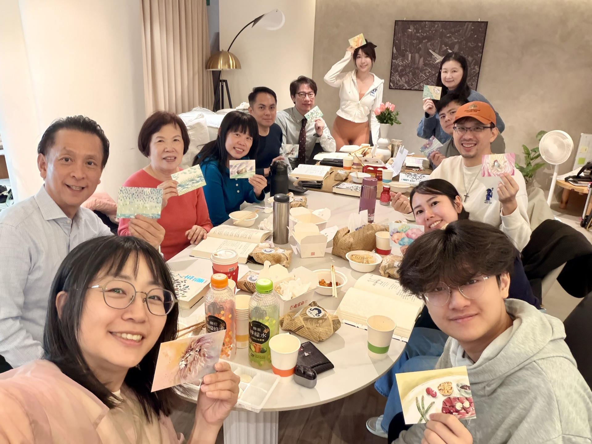

You've heard of Uber Eats and foodpanda — but have you heard of ABBAFOOD?
This is something special we do during the lunch break in office buildings: we walk into the workplace during the short one-hour midday break, deliver a surprise delicious lunch, and bring nourishment for the soul — worship songs, good books, authentic workplace life stories, group discussion, and Q&A.
ABBAFOOD is more than a lunch gathering — it's a place where people in the workplace can slowly come to know God, and come to know themselves.
Our Mission
Bringing Food to People
To bring food — both physical and spiritual — directly to people, engaging them in interactive, diverse discussions on faith, work, and real-life challenges.
Genuine, Long-term Accompaniment
To build sincere and lasting relationships of care. When someone expresses a need, the Christians around them can come alongside to help, and connect them to pastoral resources from their local church.
Who We Reach
- ▸ Young professionals, entrepreneurs across industries, and friends open to exploring faith.
- ▸ Broader reach: groups formed around shared interests, careers, or life stage — connected through community and social media even without daily in-person contact.
What Makes ABBAFOOD Different
- ▸ Great food is the invitation — it opens conversations naturally, encourages interaction, and keeps the atmosphere relaxed and fun.
- ▸ Everyone is free to come and go with no agenda — so guests feel genuinely cared for, not targeted.
How It Works
Weekday Lunch
On a weekday midday, in an office or nearby restaurant — within one hour: share a meal, sing worship songs, read a book or scripture passage, and discuss topics that matter to everyone.
Evening / Weekend
Same format as the weekday version, but held in the evenings or on weekends at a venue outside the office — flexible to fit participants' schedules and preferences.
Forum / Talk
We invite Christians from various industries to share — in an interview format — how they live out their faith in an engaging and accessible way, so participants can see real faith lived out by real people.
The Food
🍔Physical Food
- ▸ It matters — it should be appealing and change regularly to keep things fresh.
- ▸ It doesn't need to be healthy — it just needs to make people look forward to coming back.
📖Spiritual Food
-
▸
The Purpose Driven Life: Grounded in Scripture, it guides members to reflect on their own purposes and apply them to real-life situations — work, relationships, current events — with flexible discussion styles suited to participants' backgrounds and workplace culture.
-
▸
Gospel of Luke: Typically follows The Purpose Driven Life. With a reading and discussion foundation already in place, it avoids heavy theology and stays close to modern workplace and social life.
Our Team
- ▸ Christians from each ABBAFOOD location × JesuswayTaipei co-workers
- ▸ JesuswayTaipei doesn't need to be the focus. We gladly collaborate with co-workers from different church backgrounds to help workplace Christians share the gospel and be pastored — both during the week and on Sundays. This is Kingdom connection: Do God's Business together.
ABBAFOOD — 3 Reference Locations
Dongxing ABBAFOOD
📍 Xinyi District
🕒 Every other Thursday｜12:30–1:30 pm
Nangang Software Park ABBAFOOD
📍 Nangang Software Park
🕒 Every other Thursday｜12:00–1:00 pm
Mumeixue ABBAFOOD
📍 Near Yongchun MRT Station
🕒 Every other Friday｜12:30–1:30 pm
We have more locations available. If you'd like to visit, feel free to contact us — we'll share the nearest location to you.
Contact Us